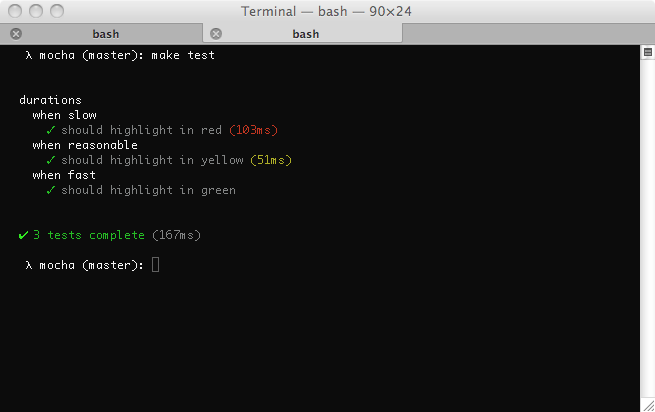
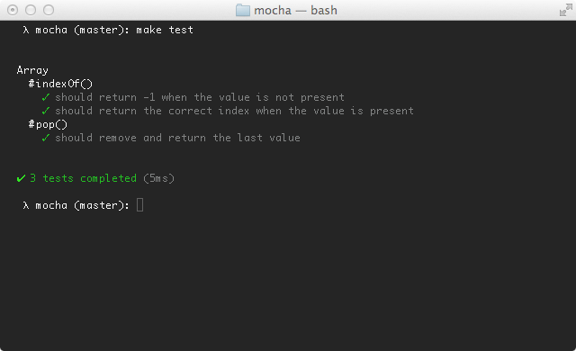
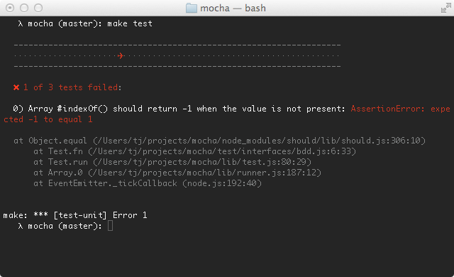
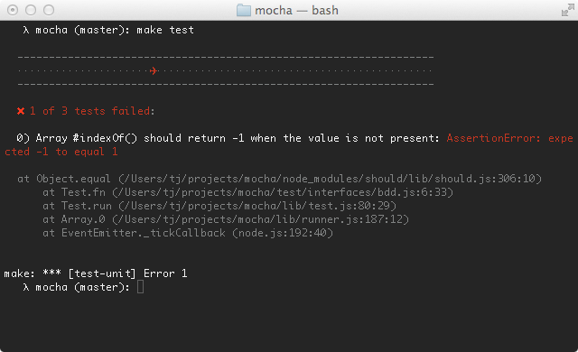
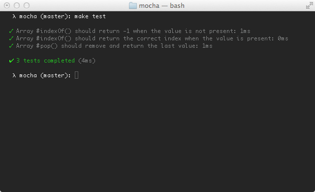
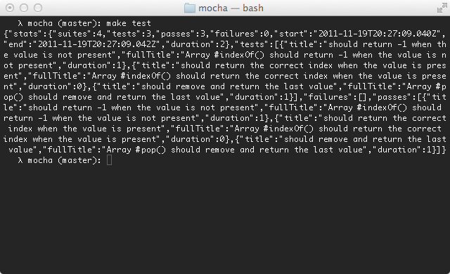
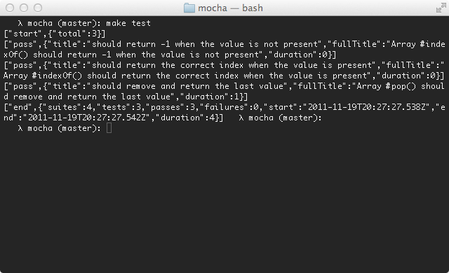
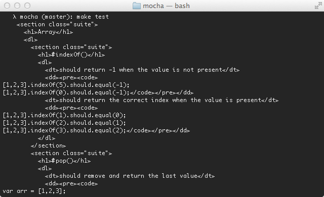

Mocha
simple, flexible, fun
Mocha is a feature-rich JavaScript test framework running on node and the browser, making asynchronous testing simple and fun. Mocha tests run serially, allowing for flexible and accurate reporting, while mapping uncaught exceptions to the correct test cases. Hosted on GitHub.
Features
- browser support
- simple async support
- proper exit status for CI support etc
- auto-detects and disables coloring for non-ttys
- maps uncaught exceptions to the correct test case
- async test timeout support
- growl notification support
- reports test durations
- highlights slow tests
- file watcher support
- global variable leak detection
- optionally run tests that match a regexp
- auto-exit to prevent "hanging" with an active loop
- easily meta-generate suites & test-cases
- mocha.opts file support
mocha-debug(1)for node debugger support- detects multiple calls to
done() - use any assertion library you want
- extensible reporting, bundled with 9+ reporters
- extensible test DSLs or "interfaces"
- before, after, before each, after each hooks
- coffee-script support
- TextMate bundle
- and more!
Installation
Install with npm:
$ npm install -g mocha
Assertions
Mocha allows you to use any assertion library you want, if it throws an error, it will work! This means you can utilize libraries such as should.js, node's regular assert module, or others.
Synchronous code
When testing synchronous code, omit the callback and Mocha will automatically continue on to the next test.
describe('Array', function(){
describe('#indexOf()', function(){
it('should return -1 when the value is not present', function(){
[1,2,3].indexOf(5).should.equal(-1);
[1,2,3].indexOf(0).should.equal(-1);
})
})
})
Asynchronous code
Testing asynchronous code with Mocha could not be simpler! Simply invoke the callback when your test is complete:
describe('User', function(){
describe('#save()', function(){
it('should save without error', function(done){
var user = new User('Luna');
user.save(function(err){
if (err) throw err;
done();
});
})
})
})
To make things even easier, the done() callback accepts an error, so we may use this directly:
describe('User', function(){
describe('#save()', function(){
it('should save without error', function(done){
var user = new User('Luna');
user.save(done);
})
})
})
All "hooks", that is before(), after(), beforeEach(), afterEach() may be sync or async as well, behaving much like a regular test-case. For example you may wish to populate database with dummy content before each test:
describe('Connection', function(){
var db = new Connection
, tobi = new User('tobi')
, loki = new User('loki')
, jane = new User('jane');
beforeEach(function(done){
db.clear(function(err){
if (err) return done(err);
db.save([tobi, loki, jane], done);
});
})
describe('#find()', function(){
it('respond with matching records', function(done){
db.find({ type: 'User' }, function(err, res){
if (err) return done(err);
res.should.have.length(3);
done();
})
})
})
})
Pending tests
Pending test-cases are simply those without a callback:
describe('Array', function(){
describe('#indexOf()', function(){
it('should return -1 when the value is not present')
})
})
Test duration
Most of the reporters support some form of displaying test duration, as well as flagging tests that are slow, as shown here with the "spec" reporter:

mocha(1)
Usage: mocha [options] [files]
Options:
-h, --help output usage information
-V, --version output the version number
-r, --require <name> require the given module
-R, --reporter <name> specify the reporter to use
-u, --ui <name> specify user-interface (bdd|tdd|exports)
-g, --grep <pattern> only run tests matching <pattern>
-t, --timeout <ms> set test-case timeout in milliseconds [2000]
-s, --slow <ms> "slow" test threshold in milliseconds [75]
-w, --watch watch test files for changes
-C, --no-colors force disabling of colors
-c, --colors force enabling of colors
-G, --growl enable growl notification support
--globals <names> allow the given comma-delimited global [names]
--ignore-leaks ignore global variable leaks
--interfaces display available interfaces
--reporters display available reporters
-w, --watch
Executes tests on changes to the test files.
--globals <names>
Accepts a comma-delimited list of accepted global variable names. For example suppose your app deliberately exposes a global named app and YUI, you may want to add --globals app,YUI.
--ignore-leaks
By default Mocha will fail when global variables are introduced, you may use --globals to specify a few, or use --ignore-leaks to disable this functionality.
-r, --require <name>
The --require option is useful for libraries such as should.js, so you may simply --require should instead of manually invoking require('should') within each test file.
-u, --ui <name>
The --ui option lets you specify the interface to use, defaulting to "bdd".
-R, --reporter <name>
The --reporter option allows you to specify the reporter that will be used, defaulting to "dot".
-t, --timeout <ms>
Specifies the test-case timeout, defaulting to 2 seconds. To override you may pass the timeout in milliseconds, or a value with the s suffix, ex: --timeout 2s or --timeout 2000 would be equivalent.
-s, --slow <ms>
Specify the "slow" test threshold, defaulting to 75ms. Mocha uses this to highlight test-cases that are taking too long.
-g, --grep <pattern>
The --grep option when specified will trigger mocha to only run tests matching the given pattern which is internally compiled to a RegExp.
Suppose for example you have "api" related tests, as well as "app" related tests, as shown in the following snippet; One could use --grep api or --grep app to run one or the other. The same goes for any other part of a suite or test-case title, --grep users would be valid as well, or even --grep GET.
describe('api', function(){
describe('GET /api/users', function(){
it('respond with an array of users')
})
})
describe('app', function(){
describe('GET /users', function(){
it('respond with an array of users')
})
})
mocha-debug(1)
mocha-debug(1) is identical to mocha(1), however it enables node's debugger so you may step through tests with the debugger statement.
Interfaces
Mocha "interface" system allows developers to choose their style of DSL. Shipping with BDD, TDD, and exports flavoured interfaces.
BDD
The "BDD" interface provides describe(), it(), before(), after(), beforeEach(), and afterEach():
describe('Array', function(){
before(function(){
// ...
});
describe('#indexOf()', function(){
it('should return -1 when not present', function(){
[1,2,3].indexOf(4).should.equal(-1);
});
});
});
TDD
The "TDD" interface provides suite(), test(), setup(), and teardown().
suite('Array', function(){
setup(function(){
// ...
});
suite('#indexOf()', function(){
test('should return -1 when not present', function(){
assert.equal(-1, [1,2,3].indexOf(4));
});
});
});
Exports
The "exports" interface is much like Mocha's predecessor expresso. The keys before, after, beforeEach, and afterEach are special-cased, object values
are suites, and function values are test-cases.
module.exports = {
before: function(){
// ...
},
'Array': {
'#indexOf()': {
'should return -1 when not present': function(){
[1,2,3].indexOf(4).should.equal(-1);
}
}
}
};
Reporters
Mocha reporters adjust to the terminal window, and always disable ansi-escape colouring when the stdio streams are not associated with a tty.
Dot Matrix
The "dot" matrix reporter is simply a series of dots that represent test cases, failures highlight in red, pending in blue, slow as yellow.

Spec
The "spec" reporter outputs a hierarchical view nested just as the test cases are.


TAP
The TAP reporter emits lines for a Test-Anything-Protocol consumer.

Landing Strip
The Landing Strip reporter is a gimmicky test reporter simulating a plane landing :) unicode ftw
 

List
The "List" reporter outputs a simple specifications list as test cases pass or fail, outputting the failure details at the bottom of the output.

Progress
The progress reporter implements a simple progress-bar:

JSON
The JSON reporter outputs a single large JSON object when the tests have completed (failures or not).

JSON Stream
The JSON Stream reporter outputs newline-delimited JSON "events" as they occur, beginning with a "start" event, followed by test passes or failures, and then the final "end" event.

Doc
The "doc" reporter outputs a hierarchical HTML body representation of your tests, wrap it with a header, footer, some styling and you have some fantastic documentation!

For example suppose you have the following JavaScript:
describe('Array', function(){
describe('#indexOf()', function(){
it('should return -1 when the value is not present', function(){
[1,2,3].indexOf(5).should.equal(-1);
[1,2,3].indexOf(0).should.equal(-1);
})
})
})
The command mocha --reporter doc array would yield:
<section class="suite">
<h1>Array</h1>
<dl>
<section class="suite">
<h1>#indexOf()</h1>
<dl>
<dt>should return -1 when the value is not present</dt>
<dd><pre><code>[1,2,3].indexOf(5).should.equal(-1);
[1,2,3].indexOf(0).should.equal(-1);</code></pre></dd>
</dl>
</section>
</dl>
</section>
HTML
The HTML reporter is currently the only browser reporter supported by Mocha, and it looks like this:

Browser support
Mocha runs in the browser. Every release of Mocha will have new builds of ./mocha.js and ./mocha.css for use in the browser. To setup Mocha for browser use all you have to do is include the script, stylesheet, tell Mocha which interface you wish to use, and then run the tests. A typical setup might look something like the following, where we call mocha.setup('bdd') to use the BDD interface before loading the test scripts, running them onload with mocha.run().
<script src="http://ajax.googleapis.com/ajax/libs/jquery/1.7.0/jquery.min.js" type="text/javascript"></script>
<link rel="stylesheet" href="style.css" />
<script src="../mocha.js"></script>
<script>mocha.setup('bdd')</script>
<script src="test.array.js"></script>
<script src="test.object.js"></script>
<script src="test.xhr.js"></script>
<script>onload = mocha.run;</script>
grep
The client-side may utilize --grep as well, however you use the query-string, for example ?grep=api.
mocha.opts
Mocha will attempt to load ./test/mocha.opts, these are concatenated with process.argv, though command-line args will take precedence. For example suppose you have the following mocha.opts file:
--require should
--reporter dot
--ui bdd
This will default the reporter to dot, require the should library,
and use bdd as the interface. With this you may then invoke mocha(1)
with additional arguments, here enabling growl support and changing
the reporter to spec:
$ mocha --reporter list --growl
Suite merging
Suites with common names are "merged" in order to produce unified reporting, especially when meta-generating tests.
describe('merge', function(){
describe('stuff', function(){
describe('one', function(){
it('should do something', function(){})
})
})
})
describe('merge', function(){
describe('stuff', function(){
describe('two', function(){
it('should do something', function(){})
})
})
})
describe('merge stuff', function(){
describe('three', function(){
it('should do something', function(){})
})
})
Instead of reporting these as distinct suites, they are merged, yielding the following:

Best practices
test/*
By default mocha(1) will use the pattern ./test/*.js, so
it's usually a good place to put your tests.
Makefiles
Be kind and don't make developers hunt around in your docs to figure
out how to run the tests, add a make test target to your Makefile:
test:
./node_modules/.bin/mocha \
--reporter list
.PHONY: test
Editors
The following editor-related packages are available:
TextMate bundle
The Mocha TextMate bundle includes snippets to make writing tests quicker and more enjoyable. To install the bundle run:
$ make tm
Example test suites
The following test suites are from real projects putting Mocha to use, so they serve as good examples:
Running mocha's tests
Run the tests:
$ make test
Run all tests, including interfaces:
$ make test-all
Alter the reporter:
$ make test REPORTER=list